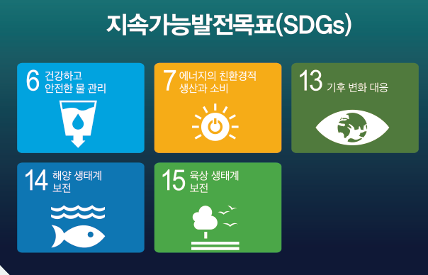
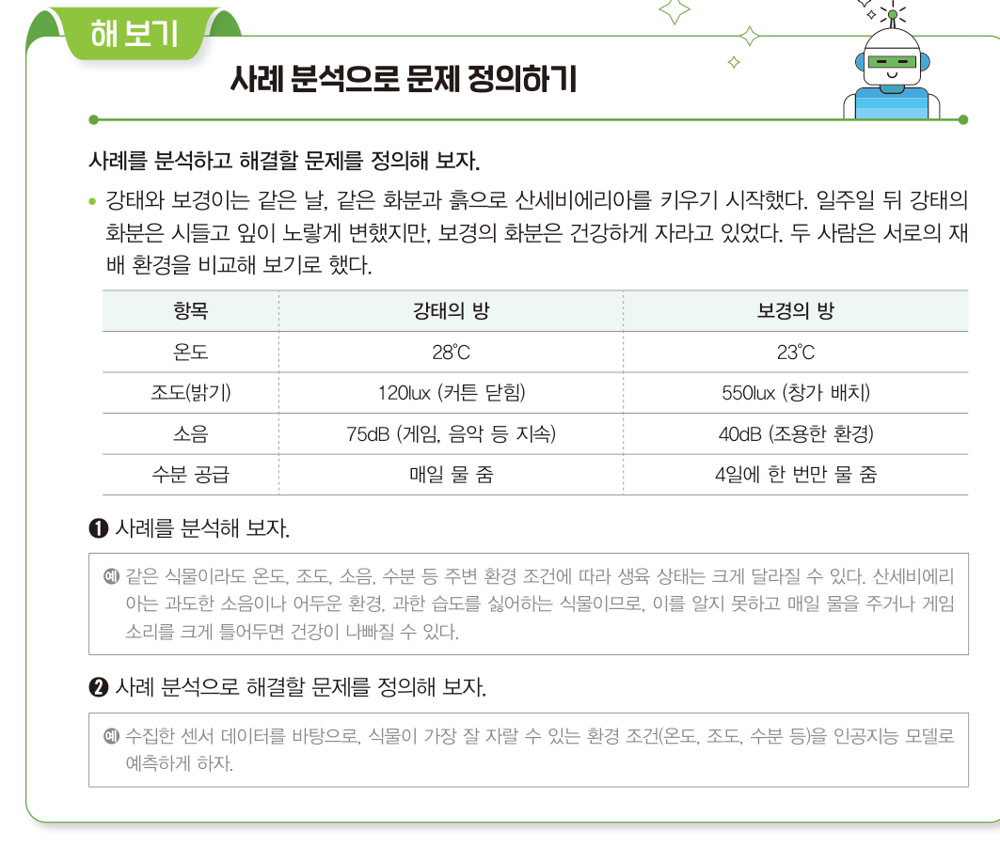
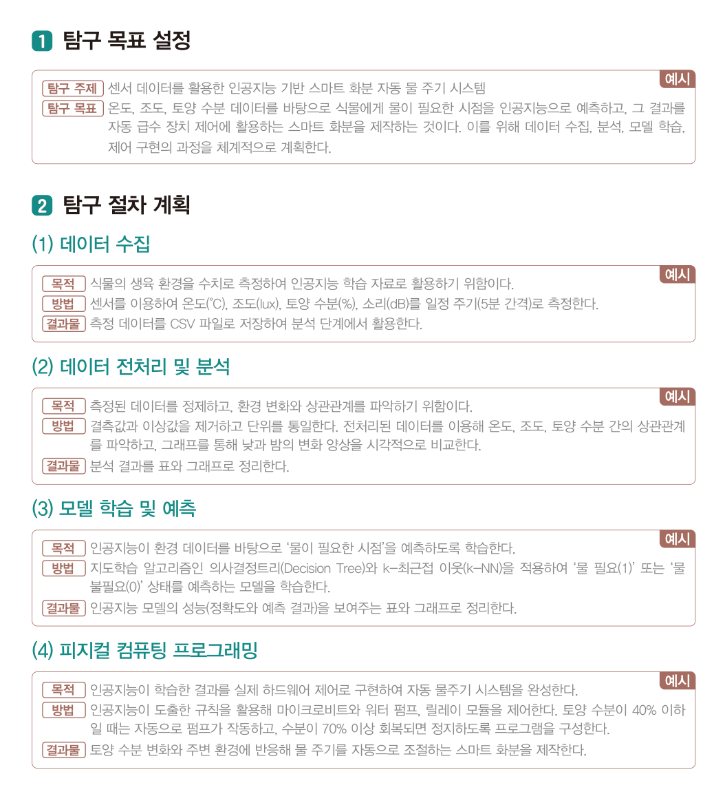
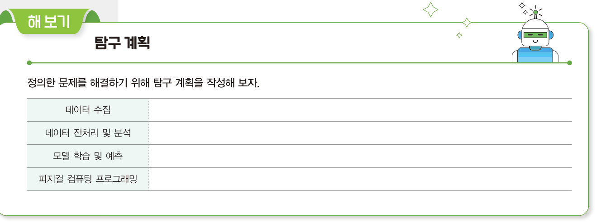
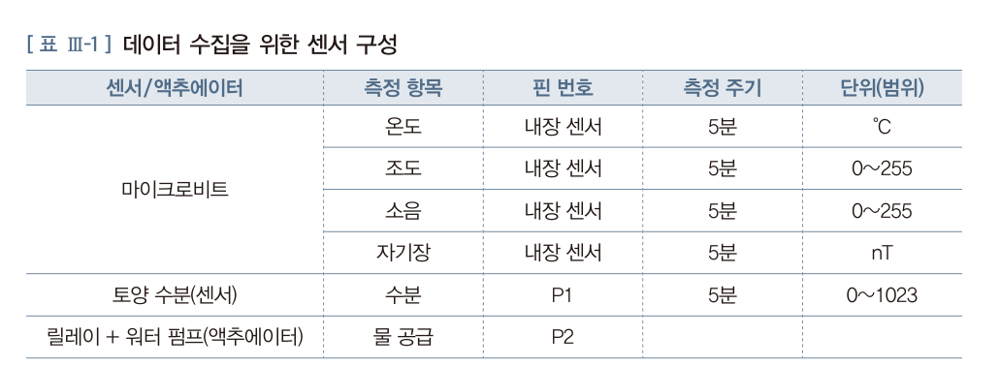
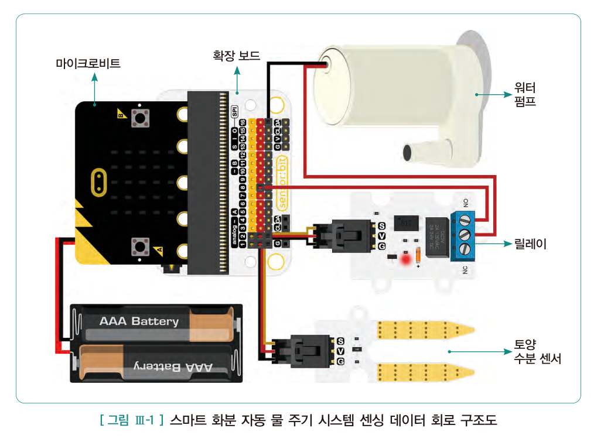
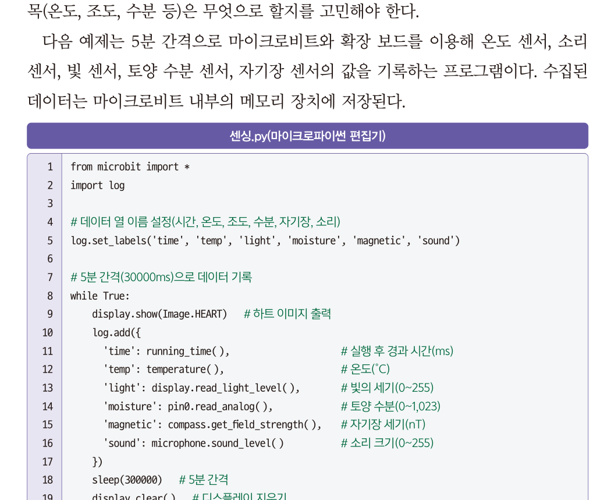
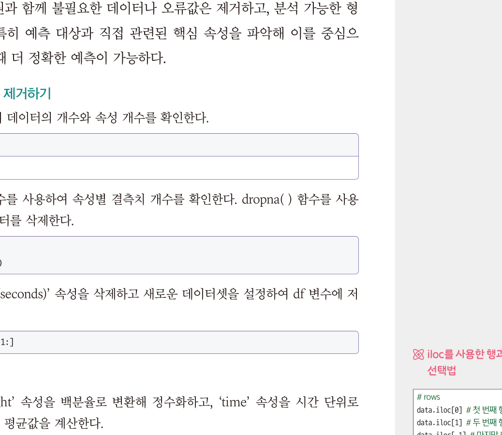
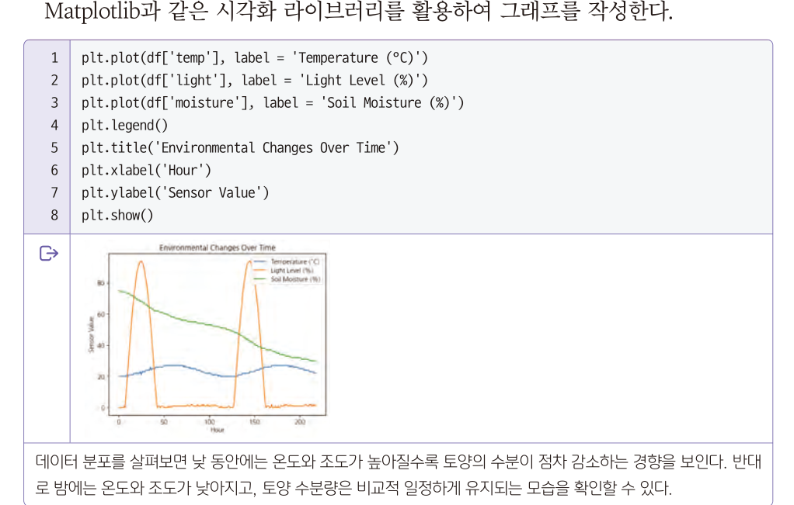
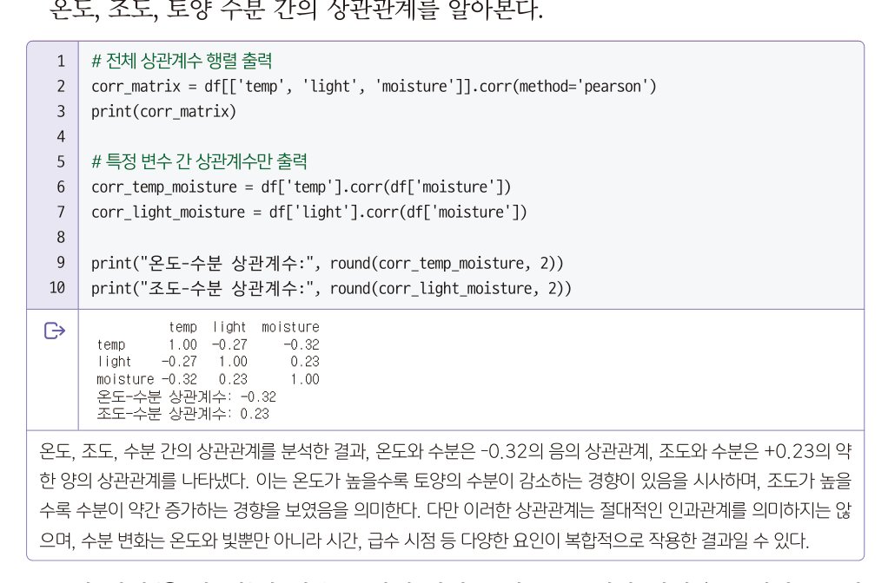

<!DOCTYPE html><html lang="ko"><head><meta charset="utf-8"><meta name="viewport" content="width=device-width,initial-scale=1">
<title>7회차 · 센싱 데이터를 활용한 인공지능 프로젝트</title>
<link rel="stylesheet" href="style.css?v=9">
<style>
/* 7회차 전용 — 식물 환경 진단기 · 상관계수 시뮬레이터 */
.plant{border:1px solid var(--line);border-radius:4px;background:var(--ink2);padding:20px;margin:16px 0}
.plant .prow{display:grid;grid-template-columns:96px 1fr 96px;gap:12px;align-items:center;margin-bottom:11px;font-size:12.5px}
.plant .prow .nm{color:var(--mut)}
.plant .prow input{accent-color:#d8b45a}
.plant .prow .vv{text-align:right;font-family:var(--serif);font-weight:800;font-size:14px}
.plant .verdict3{margin-top:16px;padding:14px 17px;border-radius:3px;font-size:13.5px;line-height:1.85}
.plant .verdict3.good{background:rgba(139,192,164,.12);border:1px solid rgba(139,192,164,.4)}
.plant .verdict3.bad{background:rgba(217,138,122,.12);border:1px solid rgba(217,138,122,.4)}
.plant .verdict3 b{color:var(--tx)}
.plant .diag{display:grid;gap:6px;margin-top:12px}
.plant .diag div{font-size:12.5px;color:var(--mut);padding:7px 12px;border-radius:2px;border-left:2px solid var(--line2)}
.plant .diag div.warn2{border-left-color:var(--rose);background:rgba(217,138,122,.07);color:var(--tx)}
.plant .diag div.ok2{border-left-color:var(--green);background:rgba(139,192,164,.06)}
.corr{border:1px solid var(--line);border-radius:4px;background:var(--ink2);padding:20px;margin:16px 0}
.corr .cwrap{display:grid;grid-template-columns:1fr 250px;gap:18px;align-items:start}
@media(max-width:720px){.corr .cwrap{grid-template-columns:1fr}}
.corr canvas{width:100%;height:260px;background:#0a0b10;border:1px solid var(--line);border-radius:3px;display:block}
.corr .rbtns{display:flex;gap:6px;flex-wrap:wrap;margin-top:12px}
.corr .rbtns button{font-size:11.5px;font-weight:700;color:var(--mut);border:1px solid var(--line2);background:transparent;
 border-radius:2px;padding:7px 11px;cursor:pointer;font-family:var(--sans)}
.corr .rbtns button:hover{color:var(--tx);border-color:var(--accent)}
.corr .rval{font-family:var(--serif);font-size:34px;font-weight:800;color:var(--accent);line-height:1}
.corr .rlab{font-size:12px;color:var(--mut);margin-top:6px;line-height:1.7}
</style></head><body>

<div class="lhead" id="lhead"></div>
<div class="bnav" id="bnav"></div>
<div id="blocks"></div>
<div id="timer"></div>

<footer><div class="wrap-n">
  2026-2 온라인 공동교육과정 · 인공지능 융합프로젝트 — 대전대신고등학교 하진수<br>
  교과서 Ⅲ. 융합 프로젝트 구현 <b>114~120쪽</b> ·
  <a href="index.html" style="color:var(--accent)">운영실 메인</a> ·
  <a href="lesson06.html" style="color:var(--accent)">← 이전 회차</a> ·
  <button class="tbtn ghost" style="margin-left:6px" onclick="resetLesson()">이 회차 기록 초기화</button>
</div></footer>

<script>
const LESSON={
n:7,date:"2026.10.19",dow:"월",time:"17:00~21:00",ch:"25~28차시",mode:"원격 수업",
title:"센싱 데이터를 활용한 인공지능 프로젝트 — 문제 인식과 데이터 수집",
goals:[
 "마이크로비트를 이용해 온도, 조도, 소음, 토양 수분 데이터를 측정하고 수집할 수 있다.",
 "수집한 데이터를 분석하여 식물에 적합한 환경 조건을 설계할 수 있다.",
 "인공지능 모델을 활용하여 식물 맞춤형 환경 시스템을 구현하고, 식물과 소통하는 창의적 아이디어를 구체화할 수 있다."],
breaks:[{after:3,mins:10},{after:4,mins:10}],
blocks:[

/* ============ 0. 도입 ============ */
{kind:"open",nav:"도입",mins:10,title:"식물은 말을 하지 않는다",
 sub:"오늘부터 Ⅲ단원입니다. 지금까지 익힌 도구로 <b>실제 프로젝트</b>를 시작합니다.",
 sections:[
 {n:"01",h:"오늘의 질문",
  html:`<div class="hook"><div class="hk">Hook</div>
   <div class="hq">같은 날, 같은 화분, 같은 흙.<br>일주일 뒤 하나는 시들고 하나는 멀쩡했다.</div>
   <p>강태와 보경이는 똑같이 산세비에리아를 키우기 시작했습니다.
   강태는 <b>매일 물을 줬고</b>, 보경이는 <b>4일에 한 번만</b> 줬습니다. 그런데 시든 것은 <b>강태의 화분</b>이었습니다.
   <br><br>왜 그럴까요? 그리고 더 중요한 질문 — <b>강태는 왜 몰랐을까요?</b>
   식물은 말을 하지 않습니다. 오늘 우리는 마이크로비트를 <b>식물 통역사</b>로 만듭니다.</p></div>
   <div class="ask"><div class="ah">발문 · 채팅창에</div>
   <ol>
    <li>강태의 화분이 시든 이유를 <b>하나만</b> 꼽아 보세요. 왜 그것이라고 생각합니까?</li>
    <li>&ldquo;물을 자주 주면 좋다&rdquo;는 생각은 어디서 왔을까요?</li>
   </ol></div>`},
 {n:"02",h:"출결과 준비 확인",
  html:`<div class="box warn"><b class="t">오늘 팀을 짭니다</b>
   7회차부터 <b>3~4명 모둠</b>으로 프로젝트를 진행합니다. 공동교육과정의 강점을 살려 <b>서로 다른 학교 학생</b>이 섞이도록 편성합니다.
   지난 시간 안내대로 <b>3회차에 정한 내 주제를 30초로 설명할 준비</b>를 하고 오셨나요?</div>
   <div class="box"><b>확인해 주세요</b>
   <ul>
    <li>카메라를 켜고 이름을 <b>학교명_이름</b> 형식으로 바꿔 주세요.</li>
    <li>교과서 <b>114~120쪽</b>을 펴 두세요. Ⅲ단원 <b>1. 센싱 데이터를 활용한 인공지능 프로젝트</b>입니다.</li>
    <li><b>코랩</b>(colab.research.google.com)에 접속해 두세요. 오늘 데이터 분석을 합니다.</li>
    <li>3회차에 작성한 <b>주제 제안서</b>를 열어 두세요.</li>
   </ul>
   <div class="mini"><span>출결 1차 · 지금</span><span>2차 · 강의 종료 시</span><span>3차 · 토의 종료 시</span></div></div>`},
 {n:"03",h:"이번 프로젝트와 SDGs",
  lead:"교과서 114쪽. 이 프로젝트는 <b>지속가능발전목표(SDGs)</b> 다섯 가지와 연결됩니다.",
  html:`<figure class="fig narrow">
   <figcaption><b>교과서 114쪽</b> 이 프로젝트와 연결된 SDGs — 6 물 관리 · 7 친환경 에너지 · 13 기후 변화 · 14 해양 생태계 · 15 육상 생태계</figcaption></figure>
   <div class="box warn"><b class="t">이번 시간 과제</b>
   우리가 키우는 식물은 말을 하지 않는다. 목이 마른지, 햇빛이 부족한지 우리는 눈치로만 짐작해 왔다. <b>이제는 데이터를 통해 식물과 소통할 수 있다.</b>
   <br><br>이번 시간에 사용할 마이크로비트는 식물의 상태를 알려 주는 <b>&lsquo;식물 통역사&rsquo;</b>가 되어 줄 것이다.
   마이크로비트 센서로 식물 주변 환경(온도, 조도, 소음, 토양 수분) 데이터를 꾸준히 측정해 변화의 패턴을 분석하고, 그 식물에 맞는 <b>최적의 조건을 과학적으로 찾아낼</b> 것이다.
   나아가 인공지능 모델을 활용해 상태에 따라 물을 자동으로 주거나 조명을 켜는 <b>&lsquo;나만의 스마트 화분&rsquo;</b>을 구현하며, 데이터로 식물과 교감하는 특별한 경험을 해 보자.</div>
   <div class="box tip"><b>SDGs 6번 &lsquo;건강하고 안전한 물 관리&rsquo;</b> · 스마트 화분의 목표는 &ldquo;<b>불필요한 급수를 줄이는 것</b>&rdquo;입니다.
   물을 많이 주는 것이 아니라 <b>필요할 때만 주는 것</b> — 이것이 이 프로젝트가 SDGs와 만나는 지점입니다.</div>`,
  pages:[{p:114,t:"1. 센싱 데이터를 활용한 인공지능 프로젝트 · 학습 목표 · SDGs · 이번 시간 과제"}]},
 {n:"04",h:"오늘의 흐름 — 네 단계 중 세 단계까지",
  html:`<div class="flow">
   <div class="fstep"><div class="n">STEP 1</div><div class="t">문제 인식</div><div class="d">강의 ① · 주제 선정과 문제 정의</div></div>
   <div class="fstep"><div class="n">STEP 2</div><div class="t">탐구 계획</div><div class="d">강의 ② · 목표와 절차 설계</div></div>
   <div class="fstep"><div class="n">STEP 3</div><div class="t">실행 및 탐구</div><div class="d">강의 ③ · 수집 → 전처리 → 시각화</div></div>
   <div class="fstep" style="opacity:.5"><div class="n">STEP 4</div><div class="t">결과 공유<br>및 성찰</div><div class="d">8회차에서</div></div>
  </div>
  <div class="box tip"><b>3회차에서 배운 네 단계입니다</b> · 문제 인식 → 탐구 계획 → 실행 및 탐구 → 결과 공유 및 성찰.
  오늘은 <b>세 번째 단계의 절반</b>까지 갑니다. 모델 학습과 자동 급수 장치는 8회차입니다.
  <br><br><b>오늘의 한 문장</b> · <b>데이터가 없으면 짐작만 남는다.</b></div>`}]},

/* ============ 1. 강의 ① ============ */
{kind:"lecture",nav:"강의 ①",mins:30,title:"1단계 문제 인식 — 무엇을 풀 것인가",
 sub:"25차시 — 막연한 관심을 <b>측정 가능한 문제</b>로 바꿉니다. 교과서 115쪽.",
 sections:[
 {n:"01",h:"주제 선정",
  lead:"지속가능발전목표(SDGs) 17개를 살펴보고, 그중 <b>인공지능으로 해결할 수 있는 주제</b>를 선정하여 해결할 문제를 구체적으로 정의합니다.",
  html:`<div class="box"><b>교과서의 주제 선정 논리</b> (115쪽)
   <br>식물은 종류마다 생육에 적절한 조건(온도, 조도, 수분 등)이 다르며, <b>이를 알지 못하면 식물 관리가 어렵습니다.</b>
   주변 환경 데이터를 수집하여 인공지능을 활용해 최적의 조건을 찾아 제시한다면, 각 식물 관리에 대한 <b>효율성과 예측력</b>을 높일 수 있습니다.</div>
   <div class="reslist">
    <a class="res" href="https://ncsd.go.kr/unsdgs/goals" target="_blank" rel="noreferrer">
     <div class="rk">SDGs · 지속가능발전포털</div><div class="rt">UN 지속가능발전목표 17개</div>
     <div class="rd">2015년 유엔에서 2030년까지 지속 가능 발전을 위해 달성하기로 한 인류 공동의 목표 17개입니다. 3회차에도 봤던 그 목록입니다.</div>
     <div class="ru">ncsd.go.kr/unsdgs/goals</div></a>
   </div>`},
 {n:"02",h:"문제 정의 — 교과서가 좁혀 간 방식",
  html:`<div class="box" style="border-left:2px solid var(--accent)"><b>교과서 115쪽의 문제 정의</b>
   <br><br>우리 주변 화분에서는 <b>물을 너무 자주 주거나 너무 늦게 주는 문제</b>로 시들거나 뿌리썩음이 발생한다.
   이 문제를 해결하기 위해 온도, 빛, 토양 수분 데이터를 주기적으로 수집하고 인공지능으로 <b>&lsquo;급수가 필요한 시점&rsquo;을 예측해 알려 주는 스마트 화분</b>을 제작하고자 한다.
   목표는 <b>불필요한 급수를 줄이고, 식물의 건강 상태를 안정적으로 유지하는 것</b>이다.</div>
   <div class="tw"><table style="min-width:560px">
    <thead><tr><th style="width:120px">단계</th><th>내용</th></tr></thead>
    <tbody>
     <tr><td><b>막연한 관심</b></td><td>&ldquo;식물을 잘 키우고 싶다&rdquo;</td></tr>
     <tr><td><b>현상 관찰</b></td><td>&ldquo;물을 너무 자주 주거나 늦게 줘서 시들거나 뿌리가 썩는다&rdquo;</td></tr>
     <tr><td><b>측정 대상 특정</b></td><td>&ldquo;온도 · 빛 · 토양 수분을 주기적으로 수집한다&rdquo;</td></tr>
     <tr><td><b>예측 대상 특정</b></td><td>&ldquo;<b>급수가 필요한 시점</b>을 예측한다&rdquo; ← 이것이 모델의 정답(레이블)</td></tr>
     <tr><td><b>목표 명시</b></td><td>&ldquo;불필요한 급수를 줄이고 건강 상태를 안정적으로 유지한다&rdquo;</td></tr>
    </tbody></table></div>
   <div class="box tip"><b>3회차에서 배운 것과 같습니다</b> · &ldquo;교통사고를 줄이자&rdquo;가 &ldquo;안전거리를 계산하는 프로그램을 만들자&rdquo;로 좁혀졌던 것처럼,
   여기서도 &ldquo;식물을 잘 키우자&rdquo;가 <b>&ldquo;급수 시점을 예측하자&rdquo;</b>로 좁혀졌습니다.
   <b>측정할 수 있고, 예측할 수 있는 형태</b>가 되어야 프로젝트가 됩니다.</div>`,
  pages:[{p:115,t:"1 문제 인식 · 주제 선정 · 문제 정의 · 해 보기"}]},
 {n:"03",h:"해 보기 — 사례 분석으로 문제 정의하기",
  lead:"교과서 115쪽. 도입에서 본 강태와 보경이의 사례입니다. 표를 보고 <b>무엇이 달랐는지</b> 찾아 보세요.",
  html:`<figure class="fig">
   <figcaption><b>교과서 115쪽</b> 해 보기 — 강태와 보경이의 재배 환경 비교. 예시 답안이 회색으로 함께 제시되어 있습니다</figcaption></figure>
   <div class="plant">
    <div style="font-size:13px;color:var(--mut);margin-bottom:14px">네 항목을 움직여 <b>산세비에리아에게 어떤 환경이 좋은지</b> 확인해 보세요. 강태의 방 조건에서 시작합니다.</div>
    <div class="prow"><div class="nm">온도</div><input type="range" id="pT" min="10" max="35" step="1" value="28"><div class="vv" id="pTv">28℃</div></div>
    <div class="prow"><div class="nm">조도(밝기)</div><input type="range" id="pL" min="20" max="800" step="10" value="120"><div class="vv" id="pLv">120lux</div></div>
    <div class="prow"><div class="nm">소음</div><input type="range" id="pS" min="20" max="90" step="1" value="75"><div class="vv" id="pSv">75dB</div></div>
    <div class="prow"><div class="nm">물 주는 주기</div><input type="range" id="pW" min="1" max="10" step="1" value="1"><div class="vv" id="pWv">1일</div></div>
    <div class="diag" id="pDiag"></div>
    <div class="verdict3" id="pMsg">—</div>
    <div style="display:flex;gap:8px;flex-wrap:wrap;margin-top:12px">
     <button class="tbtn ghost" onclick="pPre(28,120,75,1)">강태의 방</button>
     <button class="tbtn ghost" onclick="pPre(23,550,40,4)">보경의 방</button>
    </div>
   </div>
   <div class="ask"><div class="ah">발문</div>
   <ol>
    <li>두 프리셋을 번갈아 눌러 보세요. 네 항목 중 <b>가장 결정적인 차이</b>는 무엇이라고 보나요?</li>
    <li>강태에게 <b>딱 한 가지만</b> 바꾸라고 조언한다면 무엇을 고르겠습니까?</li>
    <li>이 진단기는 제가 만든 <b>규칙 기반</b> 프로그램입니다. 2회차에서 배운 규칙 기반의 <b>한계</b>는 무엇이었나요?
     <span style="color:var(--dim)">→ 그래서 8회차에 기계학습 모델로 바꿉니다.</span></li>
   </ol></div>
   <div class="box"><b>교과서 예시 답안</b>
   <br>❶ 같은 식물이라도 온도, 조도, 소음, 수분 등 주변 환경 조건에 따라 생육 상태는 크게 달라질 수 있다.
   산세비에리아는 <b>과도한 소음이나 어두운 환경, 과한 습도를 싫어하는 식물</b>이므로, 이를 알지 못하고 매일 물을 주거나 게임 소리를 크게 들려주면 건강이 나빠질 수 있다.
   <br>❷ 수집한 센서 데이터를 바탕으로, <b>식물이 가장 잘 자랄 수 있는 환경 조건(온도, 조도, 수분 등)을 인공지능 모델로 예측</b>하게 하자.</div>`},
 {n:"04",h:"모둠 구성하기",
  lead:"교과서 115쪽. 3~4명으로 모둠을 구성하고, 모둠명과 모둠원 역할을 작성합니다.",
  html:`<div class="tw"><table style="min-width:520px">
   <thead><tr><th style="width:130px">역할</th><th>하는 일</th><th style="width:110px">필요한 것</th></tr></thead>
   <tbody>
    <tr><td><b>팀장 · 기획</b></td><td>일정 관리, 역할 조정, 발표 총괄. <b>구심점을 제시하는 사람</b></td><td>2회차 인터뷰의 그 교훈</td></tr>
    <tr><td><b>센싱 · 하드웨어</b></td><td>마이크로비트 코드 작성, 센서 연결, 데이터 수집</td><td>5회차 내용</td></tr>
    <tr><td><b>데이터 분석</b></td><td>코랩에서 전처리·시각화·모델 학습</td><td>4회차 내용</td></tr>
    <tr><td><b>기록 · 산출물</b></td><td>프롬프트 로그, 보고서, 화면 캡처 관리</td><td>매 회차 활동지</td></tr>
   </tbody></table></div>
   <div class="box warn"><b class="t">2회차에서 읽은 그 실패담</b>&ldquo;아이디어는 좋았지만, 팀 리더인 제가 프로젝트의 <b>명확한 비전과 구심점을 제시하지 못했습니다.</b>
   특히 팀원들의 다양한 의견에 휩쓸려 무엇을 먼저 개발할지 우선 순위를 정하지 못하고 우왕좌왕했습니다. 결국 팀은 와해되었습니다.&rdquo;
   <br><br>개발자 이동욱의 인터뷰(교과서 50쪽)입니다. <b>오늘 팀을 짜면서 가장 먼저 정할 것은 &lsquo;무엇을 먼저 할지&rsquo;입니다.</b></div>
   <div class="box tip"><b>역할은 고정이 아닙니다</b> · 한 사람이 두 역할을 겸할 수 있고, 회차마다 바뀔 수도 있습니다.
   중요한 것은 <b>&ldquo;이번 주에 누가 무엇을 끝내는가&rdquo;</b>가 매번 분명한 것입니다.</div>`}],
 quiz:[
 {q:"교과서가 정의한 이 프로젝트의 문제로 가장 정확한 것은?",
  opts:["식물을 잘 키우는 방법을 조사한다","물을 너무 자주 또는 늦게 주는 문제를 해결하기 위해 급수가 필요한 시점을 예측한다","화분을 예쁘게 꾸민다","식물의 종류를 분류한다"],
  a:1,why:"교과서 115쪽. &ldquo;급수가 필요한 시점을 예측해 알려 주는 스마트 화분&rdquo;이 문제 정의입니다. <b>측정 가능하고 예측 가능한 형태</b>로 좁혀진 것이 핵심입니다."},
 {q:"이 프로젝트의 목표로 교과서가 밝힌 것은?",
  opts:["물을 최대한 많이 주는 것","불필요한 급수를 줄이고 식물의 건강 상태를 안정적으로 유지하는 것","화분 개수를 늘리는 것","센서를 많이 다는 것"],
  a:1,why:"&ldquo;<b>불필요한 급수를 줄이고</b>, 식물의 건강 상태를 안정적으로 유지하는 것&rdquo;입니다. SDGs 6번 물 관리와 연결됩니다. 교과서 115쪽."},
 {q:"산세비에리아 사례에서 강태의 화분이 시든 원인으로 교과서가 지적하지 <b>않은</b> 것은?",
  opts:["과도한 소음","어두운 환경","과한 습도(매일 물 주기)","화분의 크기"],
  a:3,why:"교과서 예시 답안은 <b>과도한 소음 · 어두운 환경 · 과한 습도</b> 세 가지를 지적합니다. 화분 크기는 두 사람이 같았습니다."}]},

/* ============ 2. 강의 ② ============ */
{kind:"lecture",nav:"강의 ②",mins:30,title:"2단계 탐구 계획 — 어떻게 풀 것인가",
 sub:"26차시 — 목표를 정하고 네 단계 절차를 설계합니다. 교과서 116쪽.",
 sections:[
 {n:"01",h:"탐구 목표 설정",
  html:`<div class="box" style="border-left:2px solid var(--accent)">
   <b>탐구 주제</b> · 센서 데이터를 활용한 인공지능 기반 <b>스마트 화분 자동 물 주기 시스템</b>
   <br><br><b>탐구 목표</b> · 온도, 조도, 토양 수분 데이터를 바탕으로 식물에게 <b>물이 필요한 시점을 인공지능으로 예측</b>하고,
   그 결과를 자동 급수 장치 제어에 활용하는 스마트 화분을 제작하는 것이다.
   이를 위해 <b>데이터 수집, 분석, 모델 학습, 제어 구현</b>의 과정을 체계적으로 계획한다.</div>
   <div class="box tip"><b>탐구 주제와 탐구 목표의 차이</b> · 주제는 <b>무엇을 하는가</b>(한 줄), 목표는 <b>무엇을 위해 어떻게 하는가</b>(구체적 경로)입니다.
   3회차 활동지의 &lsquo;주제를 한 문장으로&rsquo;가 탐구 주제, &lsquo;네 단계 계획 초안&rsquo;이 탐구 목표에 해당합니다.</div>`},
 {n:"02",h:"탐구 절차 계획 — 목적 · 방법 · 결과물",
  lead:"네 단계마다 <b>목적 / 방법 / 결과물</b>을 미리 정해 둡니다. 이 표가 오늘 활동지의 뼈대입니다.",
  html:`<figure class="fig">
   <figcaption><b>교과서 116쪽</b> 탐구 절차 계획 — 데이터 수집 · 전처리 및 분석 · 모델 학습 및 예측 · 피지컬 컴퓨팅</figcaption></figure>
   <div class="tw"><table style="min-width:640px">
    <thead><tr><th style="width:120px">단계</th><th style="width:32%">목적</th><th>방법과 결과물</th></tr></thead>
    <tbody>
     <tr><td><b>(1) 데이터 수집</b></td><td>식물의 생육 환경을 수치로 측정하여 <b>인공지능 학습 자료</b>로 활용하기 위함</td>
      <td>센서로 온도(℃) · 조도(lux) · 토양 수분(%) · 소리(dB)를 <b>5분 간격</b>으로 측정 →
       <b>CSV 파일</b>로 저장</td></tr>
     <tr><td><b>(2) 전처리 및 분석</b></td><td>측정된 데이터를 정제하고 <b>환경 변화와 상관관계</b>를 파악하기 위함</td>
      <td>결측값·이상값 제거, 단위 통일 → 온도·조도·토양 수분 간 <b>상관관계 분석</b>, 낮과 밤의 변화 양상 비교 →
       <b>표와 그래프</b></td></tr>
     <tr><td><b>(3) 모델 학습 및 예측</b></td><td>인공지능이 환경 데이터를 바탕으로 <b>&lsquo;물이 필요한 시점&rsquo;</b>을 예측하도록 학습</td>
      <td>지도학습 알고리즘 <b>의사결정트리</b>와 <b>k-최근접 이웃(k-NN)</b>을 적용하여
       &lsquo;물 필요(1)&rsquo; 또는 &lsquo;물 불필요(0)&rsquo; 상태를 예측 → <b>정확도와 예측 결과</b> 표·그래프
       <span style="color:var(--dim)">(8회차)</span></td></tr>
     <tr><td><b>(4) 피지컬 컴퓨팅</b></td><td>인공지능이 학습한 결과를 <b>실제 하드웨어 제어</b>로 구현</td>
      <td>마이크로비트와 워터 펌프, 릴레이 모듈을 제어. 토양 수분이 <b>40% 이하</b>일 때 자동으로 펌프 작동,
       <b>70% 이상</b> 회복되면 정지 → <b>스마트 화분</b>
       <span style="color:var(--dim)">(8회차)</span></td></tr>
    </tbody></table></div>
   <div class="box tip"><b>지금까지 배운 것이 여기 다 들어 있습니다</b> ·
   (1)은 <b>5회차</b>, (2)는 <b>4회차</b>, (3)은 <b>6회차</b>, (4)는 <b>5회차</b>입니다.
   Ⅱ단원에서 하나씩 익힌 도구들이 이제 하나의 프로젝트로 합쳐집니다.</div>`,
  pages:[{p:116,t:"2 탐구 계획 · 탐구 목표 설정 · 탐구 절차 계획 · 해 보기"}]},
 {n:"03",h:"우리 모둠의 계획 세우기",
  lead:"교과서 116쪽 &lsquo;해 보기&rsquo;. 네 칸을 우리 모둠의 언어로 채웁니다.",
  html:`<figure class="fig">
   <figcaption><b>교과서 116쪽</b> 해 보기 — 정의한 문제를 해결하기 위해 탐구 계획을 작성해 보자</figcaption></figure>
   <div class="box warn"><b class="t">주제를 바꿔도 됩니다</b>교과서 사례는 <b>스마트 화분</b>이지만, 3회차에 정한 여러분의 주제로 진행해도 좋습니다.
   <b>교실 온도 · 소음 · 습도 · 밝기</b> 중 무엇이든 센서로 잴 수 있고 <b>&ldquo;○○이 필요한 시점&rdquo;을 예측</b>하는 구조라면 같은 절차가 그대로 적용됩니다.
   <br><br>예 · &ldquo;환기가 필요한 시점&rdquo; / &ldquo;조명을 켜야 하는 시점&rdquo; / &ldquo;집중이 흐트러지는 시점&rdquo;</div>
   <div class="box"><b>데이터 수집 시 고려 사항</b> (교과서 117쪽 주의)
    <ul>
     <li><b>수집 용의성</b> · 쉽고 안정적으로 수집할 수 있는가?</li>
     <li><b>데이터 크기</b> · 분석하기에 충분한 양인가?</li>
     <li><b>데이터 활용성</b> · 프로젝트 목표와 직접 관련이 있는가?</li>
     <li><b>데이터 이해</b> · 누구나 쉽게 해석하고 기록할 수 있는가?</li>
     <li><b>데이터 신뢰성</b> · 정확하고 믿을 수 있는 데이터인가?</li>
    </ul>
    이 다섯 가지가 <b>오늘 활동지 채점 기준</b>과 직접 연결됩니다.</div>`}],
 quiz:[
 {q:"탐구 계획에서 <b>데이터 수집</b> 단계의 목적으로 옳은 것은?",
  opts:["모델의 정확도를 높이기 위함","식물의 생육 환경을 수치로 측정하여 인공지능 학습 자료로 활용하기 위함","하드웨어를 제어하기 위함","보고서를 작성하기 위함"],
  a:1,why:"교과서 116쪽. 수집 단계의 목적은 <b>인공지능 학습 자료 확보</b>입니다. 측정 자체가 목적이 아니라 학습에 쓰기 위한 것입니다."},
 {q:"이 프로젝트에서 인공지능이 예측할 <b>정답(레이블)</b>은 무엇인가?",
  opts:["온도가 몇 도인지","조도가 몇 lux인지","물이 필요한지(1) 필요하지 않은지(0)","식물의 종류"],
  a:2,why:"&lsquo;물 필요(1)&rsquo; 또는 &lsquo;물 불필요(0)&rsquo;를 예측하는 <b>분류 문제</b>입니다. 6회차에서 배운 분류가 여기에 쓰입니다. 교과서 116쪽."},
 {q:"데이터 수집 시 고려 사항 다섯 가지에 <b>포함되지 않는</b> 것은?",
  opts:["수집 용의성","데이터 크기","데이터 신뢰성","데이터 판매 가능성"],
  a:3,why:"다섯 가지는 수집 용의성 · 데이터 크기 · 데이터 활용성 · 데이터 이해 · 데이터 신뢰성입니다. 교과서 117쪽."}]},

/* ============ 3. 강의 ③ ============ */
{kind:"lecture",nav:"강의 ③",mins:30,title:"3단계 실행 — 수집하고 다듬고 들여다보기",
 sub:"27차시 — 센서를 연결하고, 데이터를 모으고, 무엇이 보이는지 확인합니다. 교과서 117~120쪽.",
 sections:[
 {n:"01",h:"센싱 데이터 회로 구성하기",
  lead:"데이터 수집 전에 <b>센서 연결 상태가 올바른지</b> 확인해야 합니다. 마이크로비트와 확장 보드에 센서를 연결하고 전원과 신호선 상태를 먼저 점검합니다.",
  html:`<figure class="fig">
   <figcaption><b>교과서 117쪽 · 표 Ⅲ-1</b> 데이터 수집을 위한 센서 구성 — 측정 항목 · 핀 번호 · 측정 주기 · 단위</figcaption></figure>
   <figure class="fig">
    <figcaption><b>교과서 117쪽 · 그림 Ⅲ-1</b> 스마트 화분 자동 물 주기 시스템 센싱 데이터 회로 구조도</figcaption></figure>
   <div class="box"><b>회로가 하는 일</b> · 토양 수분 센서가 흙의 습도를 측정해 마이크로비트로 보내고,
   마이크로비트는 이 값을 바탕으로 <b>릴레이</b>에 신호를 보냅니다. 릴레이는 워터 펌프의 전원을 켜거나 끄며,
   수분이 부족할 때 자동으로 물을 공급하도록 돕습니다.</div>
   <div class="box tip"><b>기기가 없어도 진행합니다</b> · 마이크로비트나 센서가 없는 모둠은 <b>교사가 제공하는 microbit.csv</b>로 분석 단계를 그대로 수행합니다.
   회로 구성은 그림을 보며 <b>어느 핀에 무엇이 연결되는지 설명할 수 있으면</b> 충분합니다.
   <br><br><b>측정 주기가 5분</b>인 것에 주목하세요. 5회차 데이터 로거 시뮬레이터에서 확인한 대로,
   식물 환경은 천천히 변하므로 5분이면 충분하고 메모리도 아낄 수 있습니다.</div>`,
  pages:[{p:117,t:"3 실행 및 탐구 · 1 데이터 수집 · 표 Ⅲ-1 · 그림 Ⅲ-1"}]},
 {n:"02",h:"센싱 데이터 수집하기",
  lead:"물 주기 예측을 위해 <b>온도 · 조도 · 토양 수분</b> 데이터를 활용합니다. 5회차에서 배운 log 모듈이 그대로 쓰입니다.",
  code:[{name:"센싱.py — 5분 간격으로 여섯 항목 기록",src:`from microbit import *
import log

# 데이터 열 이름 설정 (시간, 온도, 조도, 수분, 자기장, 소리)
log.set_labels('time', 'temp', 'light', 'moisture', 'magnetic', 'sound')

# 5분 간격(300000ms)으로 데이터 기록
while True:
    display.show(Image.HEART)                      # 하트 이미지 출력
    log.add({
        'time': running_time(),                    # 실행 후 경과 시간(ms)
        'temp': temperature(),                     # 온도(℃)
        'light': display.read_light_level(),       # 빛의 세기(0~255)
        'moisture': pin0.read_analog(),            # 토양 수분(0~1023)
        'magnetic': compass.get_field_strength(),  # 자기장 세기(nT)
        'sound': microphone.sound_level()          # 소리 크기
    })
    sleep(300000)                                  # 5분 대기`}],
  after:`<figure class="fig">
   <figcaption><b>교과서 118쪽</b> 센싱.py — 마이크로파이썬 편집기</figcaption></figure>
   <div class="ask"><div class="ah">발문 · 5회차와 이어서</div>
   <ol>
    <li><span style="font-family:var(--mono)">pin0.read_analog()</span>의 값은 <b>0~1023</b>입니다. 이것을 <b>%로 바꾸려면</b> 어떻게 계산해야 할까요?</li>
    <li>이 코드는 <span style="font-family:var(--mono)">while</span> + <span style="font-family:var(--mono)">sleep</span> 방식입니다.
     5회차에서 배운 <span style="font-family:var(--mono)">@run_every(s=300)</span>으로 바꾸면 무엇이 좋아질까요?</li>
    <li><b>일주일</b>을 5분 간격으로 재면 몇 번 기록될까요? 메모리는 괜찮을까요?
     <span style="color:var(--dim)">(5회차 데이터 로거 시뮬레이터로 확인해 보세요)</span></li>
   </ol></div>
   <div class="box"><b>데이터 옮기기</b> · 기록이 끝나면 5회차에서 배운 대로 <b>MY_DATA.HTM → Download</b>로 CSV를 받고,
   코랩 파일 탐색기에 <b>드래그 앤드 드롭</b>으로 업로드합니다. 교과서에서는 <span style="font-family:var(--mono)">microbit.csv</span>라는 이름을 씁니다.</div>`,
  code2:null,
  pages:[{p:118,t:"센싱 데이터 수집하기 · 데이터셋 정보 확인하기"}]},
 {n:"03",h:"데이터 전처리 — 다듬기",
  lead:"4회차에서 배운 결측치 처리와 단위 통일이 그대로 나옵니다. 교과서 119쪽.",
  html:`<figure class="fig">
   <figcaption><b>교과서 119쪽</b> 결측치 확인·제거, 단위 통일, describe( ) 통계 요약</figcaption></figure>`,
  code:[{name:"전처리 — 확인 · 제거 · 단위 통일 · 요약",src:`import numpy as np
import pandas as pd
import matplotlib.pyplot as plt

df = pd.read_csv('microbit.csv')
df.head(2)              # 앞의 2개 데이터 출력 (기본값은 5)

# 1) 데이터 개수와 속성 개수 확인
print(df.shape)

# 2) 결측치 확인 후 제거
print(df.isna().sum())
df = df.dropna()

# 3) 단위 통일 — 백분율로 변환해 정수화
df['moisture'] = (df['moisture'] / 1023 * 100).astype(int)
df['light']    = (df['light'] / 255 * 100).astype(int)

# 4) 통계 요약
pd.options.display.float_format = '{:.2f}'.format   # 소수 둘째 자리까지
print(df.describe())`}],
  after:`<div class="tw"><table style="min-width:520px">
   <thead><tr><th style="width:130px">함수</th><th>무엇을 알려 주나</th></tr></thead>
   <tbody>
    <tr><td><span style="font-family:var(--mono)">shape</span></td><td>데이터의 개수(행)와 속성 개수(열)</td></tr>
    <tr><td><span style="font-family:var(--mono)">isna().sum()</span></td><td>열별 결측치 개수 — 어디가 비었는지</td></tr>
    <tr><td><span style="font-family:var(--mono)">describe()</span></td><td>평균 · 표준편차 · 최솟값 · 최댓값 등 <b>주요 통계값</b>을 자동 계산</td></tr>
   </tbody></table></div>
   <div class="box tip"><b>왜 단위를 통일하나</b> · 토양 수분은 0~1023, 조도는 0~255입니다.
   <b>범위가 다르면 그래프에서 비교하기 어렵고</b>, 8회차에 배울 k-NN처럼 <b>거리를 계산하는 알고리즘은 큰 값에 끌려갑니다.</b>
   그래서 둘 다 <b>0~100%</b>로 맞춰 둡니다.</div>
   <div class="ask"><div class="ah">발문</div>
   <span style="font-family:var(--mono)">df.dropna()</span>는 결측치가 있는 <b>행 전체를 삭제</b>합니다.
   4회차 산불 데이터에서는 <b>이전값 치환</b>을 썼는데, 여기서는 왜 삭제가 괜찮을까요?
   <span style="color:var(--dim)">힌트 · 산불 데이터의 빈칸은 &lsquo;셀 병합&rsquo; 때문이었고, 센서 데이터의 빈칸은 &lsquo;측정 실패&rsquo; 때문입니다.</span></div>`,
  pages:[{p:119,t:"2 데이터 전처리 · 결측치 · 단위 통일 · describe( )"}]},
 {n:"04",h:"데이터 시각화 및 분석 — 무엇이 보이는가",
  lead:"온도, 조도, 토양 수분 등 전처리한 센서 데이터로 <b>환경 변화 패턴</b>을 분석합니다. 교과서 120쪽.",
  html:`<figure class="fig">
   <figcaption><b>교과서 120쪽</b> 시간에 따른 온도 · 조도 · 토양 수분 변화</figcaption></figure>
   <div class="box"><b>교과서가 읽어 낸 것</b> · 데이터 분포를 살펴보면 <b>낮 동안에는 온도와 조도가 높아질수록 토양의 수분이 점차 감소</b>하는 경향을 보입니다.
   반대로 밤에는 온도와 조도가 낮아지고, 토양 수분량은 비교적 일정하게 유지되는 모습을 확인할 수 있습니다.</div>
   <figure class="fig">
    <figcaption><b>교과서 120쪽</b> 상관관계 분석 — 온도-수분 <b>-0.32</b>, 조도-수분 <b>+0.23</b></figcaption></figure>`,
  code:[{name:"상관관계 분석",src:`# 전체 상관계수 행렬 출력
corr_matrix = df[['temp', 'light', 'moisture']].corr(method='pearson')
print(corr_matrix)

# 특정 변수 간 상관계수만 출력
corr_temp_moisture = df['temp'].corr(df['moisture'])
corr_light_moisture = df['light'].corr(df['moisture'])

print("온도-수분 상관계수:", round(corr_temp_moisture, 2))
print("조도-수분 상관계수:", round(corr_light_moisture, 2))`}],
  after:`<div class="corr">
   <div style="font-size:13px;color:var(--mut);margin-bottom:14px"><b>-0.32</b>는 어느 정도일까요? 슬라이더를 움직여 상관계수와 산점도의 모습을 맞춰 보세요.</div>
   <div class="cwrap">
    <div><canvas id="cvs" width="600" height="260"></canvas>
     <div class="rbtns">
      <button onclick="setR(-0.32)">온도-수분 (-0.32)</button>
      <button onclick="setR(0.23)">조도-수분 (+0.23)</button>
      <button onclick="setR(0)">관계 없음 (0)</button>
      <button onclick="setR(0.95)">거의 완전 (+0.95)</button>
     </div></div>
    <div>
     <div class="rval" id="rVal">-0.32</div>
     <div class="rlab" id="rLab">—</div>
     <input type="range" id="rRange" min="-100" max="100" step="1" value="-32"
      style="width:100%;accent-color:#d8b45a;margin-top:14px">
    </div>
   </div>
  </div>
  <div class="box warn"><b class="t">교과서가 덧붙인 가장 중요한 한 문장</b>
   &ldquo;다만 이러한 상관관계는 <b>절대적인 인과관계를 의미하지는 않으며</b>, 수분 변화는 온도와 빛뿐만 아니라
   <b>시간, 급수 시점 등 다양한 요인이 복합적으로 작용한 결과</b>일 수 있다.&rdquo;
   <br><br>4회차 토의 논제 2번(&ldquo;잠을 더 자면 스트레스가 줄어드는가&rdquo;)과 똑같은 이야기입니다.
   <b>상관은 인과가 아닙니다.</b> 보고서에 이 구분을 지키지 않으면 감점입니다.</div>
   <div class="ask"><div class="ah">발문</div>
   <ol>
    <li>온도-수분이 <b>음의 상관</b>(-0.32)인 이유를 과학적으로 설명해 보세요.</li>
    <li>조도-수분이 <b>양의 상관</b>(+0.23)으로 나왔습니다. 이상하지 않나요? 밝으면 더 마를 것 같은데요.
     <span style="color:var(--dim)">→ 이것이 &lsquo;상관 ≠ 인과&rsquo;의 좋은 예입니다. 무엇이 숨어 있을까요?</span></li>
    <li>&lsquo;시간&rsquo;과 &lsquo;급수 시점&rsquo;을 함께 고려하면 해석이 어떻게 달라질까요?</li>
   </ol></div>`,
  pages:[{p:120,t:"3 데이터 시각화 및 분석 · 시각화 · 상관관계 분석"}]}],
 quiz:[
 {q:"토양 수분 센서 <span style='font-family:var(--mono)'>pin0.read_analog()</span>의 값 범위는?",
  opts:["0~100","0~255","0~1023","0~4095"],
  a:2,why:"아날로그 핀 입력은 <b>0~1023</b>입니다. 조도는 0~255이므로 둘의 범위가 달라 단위 통일이 필요합니다. 교과서 117쪽 표 Ⅲ-1."},
 {q:"조도(0~255)와 토양 수분(0~1023)을 모두 0~100%로 바꾸는 이유로 가장 적절한 것은?",
  opts:["파일 용량을 줄이기 위해","범위가 달라 비교가 어렵고, 거리 기반 알고리즘이 큰 값에 끌려가기 때문","센서가 고장 나기 때문","코드가 짧아지기 때문"],
  a:1,why:"단위를 통일하지 않으면 그래프 비교가 어렵고, k-NN처럼 <b>거리를 계산하는 알고리즘</b>은 값의 범위가 큰 변수에 끌려갑니다. 교과서 119쪽."},
 {q:"교과서에서 온도와 토양 수분의 상관계수는?",
  opts:["+0.32","-0.32","+0.23","-0.23"],
  a:1,why:"<b>-0.32</b>의 음의 상관관계입니다. 온도가 높을수록 토양 수분이 감소하는 경향을 시사합니다. 조도-수분은 +0.23입니다. 교과서 120쪽."},
 {q:"상관관계 분석 결과를 해석할 때 반드시 유의할 점은?",
  opts:["상관계수가 크면 반드시 인과관계가 있다","상관관계는 절대적인 인과관계를 의미하지 않는다","상관계수는 항상 양수다","상관계수가 0이면 데이터가 잘못된 것이다"],
  a:1,why:"교과서 120쪽이 명시합니다. 수분 변화는 온도와 빛뿐 아니라 <b>시간, 급수 시점 등 다양한 요인</b>이 복합적으로 작용한 결과일 수 있습니다."}]},

/* ============ 4. 과제 ============ */
{kind:"task",nav:"과제",mins:60,title:"우리 모둠 탐구 계획서와 데이터 분석",
 sub:"28차시 · 교과서 115~120쪽 활동 종합. 모둠 단위로 작성하되 <b>개인별로도 제출</b>합니다.",
 sections:[
 {n:"01",h:"오늘 해야 할 세 가지",
  html:`<div class="flow">
   <div class="fstep"><div class="n">1</div><div class="t">모둠 구성과<br>역할 분담</div><div class="d">3~4명 · 모둠명 · 역할표</div></div>
   <div class="fstep"><div class="n">2</div><div class="t">탐구 계획서<br>작성</div><div class="d">네 단계 목적·방법·결과물</div></div>
   <div class="fstep"><div class="n">3</div><div class="t">데이터 분석<br>노트북</div><div class="d">전처리 · 상관관계 · 시각화</div></div>
  </div>
  <div class="box warn"><b class="t">데이터가 없는 모둠은</b>센서를 아직 구하지 못했거나 측정 기간이 부족한 모둠은
   <b>교사가 제공하는 microbit.csv</b>를 사용하세요. 제공 데이터로 분석해도 감점하지 않습니다.
   <b>중요한 것은 &lsquo;분석 절차를 스스로 설계했는가&rsquo;</b>입니다.
   <br><br>단, 8회차까지는 <b>가능하면 실제 측정 데이터</b>를 확보해 오세요. 자기 데이터로 분석할 때 훨씬 재미있습니다.</div>`},
 {n:"02",h:"코랩 분석 순서 — 오늘 해 볼 것",
  html:`<div class="tw"><table style="min-width:560px">
   <thead><tr><th style="width:70px">순서</th><th style="width:210px">할 일</th><th>확인할 것</th></tr></thead>
   <tbody>
    <tr><td><b>①</b></td><td>CSV 업로드 후 <span style="font-family:var(--mono)">read_csv</span> · <span style="font-family:var(--mono)">head()</span></td><td>열 이름이 제대로 읽혔는가</td></tr>
    <tr><td><b>②</b></td><td><span style="font-family:var(--mono)">shape</span> · <span style="font-family:var(--mono)">isna().sum()</span></td><td>데이터가 몇 개인가, 어디가 비었는가</td></tr>
    <tr><td><b>③</b></td><td>결측치 처리 (제거 또는 치환)</td><td><b>왜 그 방법을 골랐는지</b> 설명할 수 있는가</td></tr>
    <tr><td><b>④</b></td><td>단위 통일 (0~100%)</td><td>변환 후 값이 이상하지 않은가</td></tr>
    <tr><td><b>⑤</b></td><td><span style="font-family:var(--mono)">describe()</span></td><td>평균·최솟값·최댓값이 상식적인가</td></tr>
    <tr><td><b>⑥</b></td><td>시간에 따른 변화 그래프</td><td>낮과 밤의 패턴이 보이는가</td></tr>
    <tr><td><b>⑦</b></td><td><span style="font-family:var(--mono)">corr()</span> 상관관계</td><td>어떤 변수끼리 관계가 있는가</td></tr>
   </tbody></table></div>
   <div class="box tip"><b>막히면 4회차 프롬프트 원칙</b> · 데이터의 <b>열 이름과 무엇을 확인하려는지</b>를 함께 알려 주세요.
   &ldquo;분석해 줘&rdquo;가 아니라 &ldquo;<b>temp, light, moisture 열이 있는 데이터에서 온도와 수분의 상관계수를 구하고 산점도로 시각화하는 코드를 단계별로 설명하며 작성해 줘</b>&rdquo;입니다.</div>`}],
 worksheet:{title:"우리 모둠 탐구 계획서와 데이터 분석",
  desc:"교과서 115~120쪽 활동을 종합한 활동지입니다. 모둠에서 함께 논의하되 <b>개인별로 제출</b>합니다. 입력하는 즉시 저장됩니다.",
  fields:[
  {label:"1. 모둠명과 모둠원 역할 분담",req:1,rows:4,hint:"모둠명과 이름·역할을 적습니다. 역할은 팀장·센싱·분석·기록을 참고하되 우리 모둠에 맞게 정하세요.",ph:"모둠명 — 초록통역사\n· 홍길동(대신고) — 팀장·기획, 일정 관리와 발표 총괄\n· 김영희(○○고) — 센싱, 마이크로비트 코드와 센서 연결\n· 이철수(△△고) — 분석, 코랩 전처리와 시각화\n· 박민지(□□고) — 기록, 프롬프트 로그와 보고서"},
  {label:"2. 문제 인식 — 우리 모둠이 정의한 문제",req:1,rows:4,hint:"교과서처럼 <b>현상 → 측정 대상 → 예측 대상 → 목표</b> 순서로 좁혀 씁니다. 3회차 주제를 그대로 써도, 스마트 화분으로 바꿔도 됩니다.",ph:"예) 우리 교실은 5교시에 이산화탄소가 높아져 졸음이 온다. 온도·습도·소음을 5분 간격으로 측정해 '환기가 필요한 시점'을 예측하고, 필요할 때만 창문을 열도록 알려 주는 시스템을 만든다. 목표는 불필요한 냉난방 손실을 줄이면서 집중도를 유지하는 것이다."},
  {label:"3. 이 주제가 연결되는 SDGs 목표",req:1,rows:2,hint:"17개 중 하나 이상을 고르고, 왜 연결되는지 한 문장으로 적습니다.",ph:"예) 7번 에너지의 친환경적 생산과 소비 — 필요할 때만 환기하면 냉난방 에너지 낭비를 줄일 수 있다. 13번 기후 변화 대응과도 이어진다."},
  {label:"4. 탐구 계획 (1) 데이터 수집 — 목적 · 방법 · 결과물",req:1,rows:4,hint:"어떤 센서로 무엇을 어떤 주기로 얼마나 오래 잴 것인지 구체적으로. <b>왜 그 주기인지</b> 근거를 붙이세요.",ph:"목적 — 교실 환경을 수치로 측정해 인공지능 학습 자료로 쓰기 위함\n방법 — 마이크로비트 온도·소음·조도를 5분 간격으로 3일간 측정. 5교시 전후를 반드시 포함\n결과물 — CSV 파일 약 860행"},
  {label:"5. 탐구 계획 (2) 전처리 및 분석 — 목적 · 방법 · 결과물",req:1,rows:4,hint:"결측치를 어떻게 처리할지, 어떤 단위로 통일할지, 어떤 관계를 볼지 적습니다.",ph:"목적 — 측정 데이터를 정제하고 환경 변화와 상관관계를 파악하기 위함\n방법 — 측정 실패로 생긴 결측치는 dropna로 제거. 조도는 0~100%로 변환. 온도-소음, 온도-시간대의 상관관계 확인\n결과물 — 상관계수 표와 시간대별 변화 그래프"},
  {label:"6. 탐구 계획 (3) 모델 학습 및 예측 — 무엇을 예측할 것인가",req:1,rows:4,hint:"예측할 <b>정답(레이블)</b>을 0과 1로 정의하고, 그 기준을 밝히세요. 8회차에 실제로 학습시킵니다.",ph:"목적 — 환경 데이터로 '환기가 필요한 시점'을 예측하도록 학습\n레이블 정의 — 온도 26℃ 초과이고 소음 60 이상이면 '환기 필요(1)', 아니면 '불필요(0)'\n방법 — 의사결정트리와 k-NN을 적용해 정확도 비교\n결과물 — 정확도와 혼동행렬"},
  {label:"7. 탐구 계획 (4) 피지컬 컴퓨팅 — 무엇을 제어할 것인가",req:1,rows:3,hint:"모델의 예측 결과로 어떤 장치를 어떻게 움직일지 적습니다. 장치가 없으면 LED·알림음으로 대체해도 됩니다.",ph:"목적 — 예측 결과를 실제 동작으로 구현\n방법 — 환기 필요로 판정되면 마이크로비트 LED에 'O'를 표시하고 알림음을 낸다. 서보모터가 있으면 창문 개폐로 확장\n결과물 — 자동 알림 장치"},
  {label:"8. 데이터 분석 결과 — 오늘 코랩에서 확인한 것",req:1,rows:5,hint:"데이터 개수, 결측치 수, 통계 요약에서 눈에 띈 점, <b>상관계수 값과 그 해석</b>을 적습니다. 상관과 인과를 구분해 쓰세요.",ph:"예) 총 412행, 결측치 7개(측정 실패로 판단해 제거). describe에서 온도 최저 19.2 최고 29.8. 온도-소음 상관계수 +0.41로 약한 양의 상관. 사람이 많고 활동이 많은 시간에 둘 다 올라가는 것으로 보이며, 소음이 온도를 올린다는 인과로 볼 수는 없다."},
  {label:"9. 사용한 프롬프트와 적용한 원칙",req:1,rows:4,hint:"AI에게 입력한 프롬프트를 그대로 적고, 4회차의 5원칙·4기법 중 무엇을 적용했는지 표시합니다.",ph:"[프롬프트] 당신은 데이터 분석 전문가입니다. temp, light, moisture, sound 열이 있는 센서 데이터입니다. 결측치를 확인해 제거하고, moisture는 0~1023을 백분율로, light는 0~255를 백분율로 변환한 뒤 세 변수의 상관계수 행렬을 출력하는 코드를 단계별로 설명하며 작성해 주세요.\n[적용 원칙] ④ 역할 부여 + ③ 맥락 제공 + ① 구체적 지시 + CoT"},
  {label:"10. 코랩 노트북 링크",req:1,type:"text",hint:"공유 설정을 '링크가 있는 모든 사용자 - 뷰어'로 바꾼 뒤 주소를 붙여 넣으세요.",ph:"https://colab.research.google.com/drive/..."},
  {label:"11. 8회차까지 각자 해 올 일",rows:3,hint:"모둠원별로 다음 시간까지 무엇을 끝낼지 이름과 함께 적습니다. 이것이 이슈 트래킹의 시작입니다.",ph:"예) 김영희 — 센싱 코드를 3일간 돌려 CSV 확보 / 이철수 — 레이블 기준 확정하고 라벨 열 추가 / 박민지 — 회로 사진 촬영과 보고서 1~2장 초안"}]},
 rubric:{title:"활동지 채점 기준표 — 우리 모둠 탐구 계획서와 데이터 분석",
  area:"영역 2 · 융합 프로젝트 구현", areaPoints:40, when:"평가시기 9~10월 · 25~28차시",
  items:[
  {n:"문제 정의의 구체성",pt:5,
   hi:"현상 → 측정 대상 → <b>예측 대상(레이블)</b> → 목표 순으로 좁혀 정의했고, SDGs와의 연결도 밝혔다.",
   mid:"문제를 정의했으나 예측 대상이 불분명하거나 목표가 막연하다.",
   lo:"주제만 적었고 측정·예측 대상이 없다."},
  {n:"데이터 수집 계획",pt:5,
   hi:"센서 · 측정 주기 · 기간을 정하고 <b>왜 그 주기인지</b> 근거를 밝혔다. 수집 시 고려 사항 다섯 가지에 비추어 점검했다.",
   mid:"계획은 있으나 주기 선택의 근거가 약하다.",
   lo:"수집 계획이 없다."},
  {n:"레이블 정의",pt:5,
   hi:"예측할 정답을 <b>0과 1로 명확히 정의</b>하고 그 기준값의 근거를 밝혔다.",
   mid:"레이블을 정했으나 기준값의 근거가 없다.",
   lo:"무엇을 예측할지 정하지 못했다."},
  {n:"전처리와 상관관계 분석",pt:5,
   hi:"결측치 처리 방법을 <b>데이터의 성격에 맞게</b> 선택해 근거를 밝히고, 상관계수를 구해 <b>상관과 인과를 구분</b>해 해석했다.",
   mid:"분석은 수행했으나 처리 방법의 근거가 약하거나 인과로 단정했다.",
   lo:"분석을 수행하지 못했다."},
  {n:"모둠 협업과 다음 계획",pt:5,
   hi:"역할이 구체적으로 나뉘었고, <b>다음 시간까지 누가 무엇을 끝낼지</b>가 이름과 함께 명확하다.",
   mid:"역할은 나눴으나 다음 계획이 막연하다.",
   lo:"역할 분담이 없다."}],
  note:"이 활동지 <b>25점</b>은 영역 2(융합 프로젝트 구현, 40점) 중 <b>12점</b>으로 환산합니다. (환산 점수 = 활동지 점수 ÷ 25 × 12, 소수 첫째 자리 반올림)<br>센서 미보유 모둠이 <b>교사 제공 데이터</b>로 분석한 경우에도 감점하지 않습니다. 미제출은 0점이며, 마감 후 1주 이내 재제출은 배점의 80%까지 인정합니다."},
 tail:`<div class="box task" style="margin-top:20px"><span class="tag b">제출</span>
  <b>제출물</b> · 활동지 1부 (구글 문서, 개인별) + 코랩 노트북 링크<br>
  <b>문서 이름</b> · <span style="font-family:var(--mono)">7회차_탐구계획서_모둠명_학교명_이름</span><br>
  <b>제출 방법</b> · 활동지 아래 <b>[📄 구글 문서로 만들기]</b> → <b>Ctrl+V</b> → 문서 이름 변경 → 제출 폴더로 이동<br>
  <b>마감</b> · 오늘 수업 종료 시각(21:00)까지</div>`},

/* ============ 5. 토의 ============ */
{kind:"talk",nav:"토의",mins:30,title:"데이터가 말하는 것과 우리가 믿고 싶은 것",
 sub:"소회의실 15분 → 전체 공유 15분. 오늘은 <b>모둠별</b>로 진행합니다.",
 sections:[
 {n:"01",h:"진행 방식",
  html:`<div class="flow">
   <div class="fstep"><div class="n">0~2분</div><div class="t">모둠 소회의실</div><div class="d">오늘 짠 모둠 그대로 이동</div></div>
   <div class="fstep"><div class="n">2~12분</div><div class="t">계획 점검</div><div class="d">모둠 계획을 서로 검증 — 빈 칸 찾기</div></div>
   <div class="fstep"><div class="n">12~15분</div><div class="t">논제 고르기</div><div class="d">아래 셋 중 하나로 모둠 결론 만들기</div></div>
   <div class="fstep"><div class="n">15~30분</div><div class="t">전체 공유</div><div class="d">모둠별 1분 발표 + 교사 피드백</div></div>
  </div>
  <div class="box tip"><b>계획 점검 체크</b> · 서로에게 이 세 가지를 물어 주세요.
  ① <b>무엇을 0과 1로 예측</b>하는가? ② 그 기준값의 <b>근거</b>는? ③ 데이터를 <b>언제까지 얼마나</b> 모을 것인가?</div>`},
 {n:"02",h:"토의 논제",
  html:`<div class="box talk"><span class="tag g">논제 1 · 조도-수분이 양의 상관이라니</span>
   <b>밝으면 더 마를 것 같은데, 왜 조도와 수분이 +0.23으로 나왔을까?</b><br>
   교과서 120쪽의 실제 결과입니다. 상식과 반대로 보입니다.
   <b>숨어 있는 제3의 변수</b>가 있을 수 있습니다 — 무엇일까요? (힌트 · 사람은 언제 물을 주는가?)
   모둠의 가설을 하나 만들고, 그것을 <b>어떻게 확인할 수 있을지</b>까지 말해 보세요.</div>
  <div class="box talk" style="margin-top:12px"><span class="tag g">논제 2 · 레이블은 누가 정하는가</span>
   <b>&lsquo;물이 필요한 시점&rsquo;의 기준을 토양 수분 40%로 잡을 것인가, 50%로 잡을 것인가?</b><br>
   이 숫자를 정하는 순간 모델의 정답이 결정됩니다. <b>정답을 사람이 정하는데</b>, 그렇다면 모델은 무엇을 배우는 걸까요?
   기준을 잘못 잡으면 어떤 일이 생길까요? (5회차 낙상 임곗값 토의와 이어집니다)</div>
  <div class="box talk" style="margin-top:12px"><span class="tag g">논제 3 · 3일이면 충분한가</span>
   <b>3일치 데이터로 학습한 모델을 1년 내내 믿어도 되는가?</b><br>
   우리가 모을 수 있는 데이터는 며칠분입니다. 여름에 모은 데이터로 겨울을 예측할 수 있을까요?
   <b>데이터가 부족할 때 정직한 태도</b>는 무엇일까요? 보고서에 어떻게 써야 할까요?</div>`}],
 worksheet:{title:"토의 기록",
  desc:"모둠에서 나온 이야기를 정리합니다. 이 기록도 수행평가 관찰 근거가 됩니다.",
  fields:[
  {label:"1. 우리 모둠이 고른 논제와 결론",rows:3,hint:"결론은 한 문장으로. 반대 의견이 있었다면 함께 적습니다."},
  {label:"2. 다른 모둠의 지적으로 우리 계획에서 발견한 빈 칸",rows:3,hint:"무엇이 비어 있다고 지적받았는지, 어떻게 채울지."},
  {label:"3. 우리 계획에서 고칠 부분",rows:2,hint:"토의 뒤 실제로 고쳤다면 무엇을 고쳤는지 적습니다."}]}},

/* ============ 6. 정리 ============ */
{kind:"close",nav:"정리",mins:30,title:"오늘 정리와 다음 시간",
 sections:[
 {n:"01",h:"오늘의 핵심",
  html:`<div class="grid g3">
   <div class="card"><h4>문제 인식</h4><p>막연한 관심을 <b>측정 가능하고 예측 가능한</b> 문제로 좁힌다. &ldquo;급수가 필요한 시점을 예측한다&rdquo;</p></div>
   <div class="card"><h4>탐구 계획</h4><p>네 단계마다 <b>목적 · 방법 · 결과물</b>을 미리 정한다</p></div>
   <div class="card"><h4>레이블</h4><p>예측할 정답을 <b>0과 1</b>로 정의. 그 기준값은 <b>사람이</b> 정한다</p></div>
   <div class="card"><h4>단위 통일</h4><p>0~1023과 0~255를 <b>0~100%</b>로. 거리 기반 알고리즘이 큰 값에 끌리지 않도록</p></div>
   <div class="card"><h4>상관계수</h4><p>온도-수분 <b>-0.32</b>, 조도-수분 <b>+0.23</b></p></div>
   <div class="card"><h4>상관 ≠ 인과</h4><p>다양한 요인이 복합적으로 작용한 결과일 수 있다. <b>보고서에서 반드시 구분</b></p></div>
  </div>`},
 {n:"02",h:"오늘 남긴 것",
  html:`<div class="tw"><table style="min-width:520px">
   <thead><tr><th style="width:150px">산출물</th><th>내용</th><th style="width:150px">이후 쓰임</th></tr></thead>
   <tbody>
    <tr><td><b>탐구 계획서</b></td><td>모둠 구성 · 문제 정의 · 네 단계 계획 · 레이블 정의</td><td>영역 2 평가 12점 · 최종 보고서 1~2장</td></tr>
    <tr><td><b>코랩 노트북</b></td><td>전처리 · 통계 요약 · 상관관계 · 시각화</td><td>8회차 모델 학습에 <b>그대로 이어서</b> 사용</td></tr>
    <tr><td><b>토의 기록</b></td><td>제3의 변수, 레이블 기준, 데이터 부족 문제</td><td>수행평가 관찰 기록 · 세특 근거</td></tr>
   </tbody></table></div>`},
 {n:"03",h:"다음 시간 예고 — 8회차 (10/26 월)",
  html:`<div class="box"><b>모델 학습과 스마트 화분 완성</b> · 교과서 121~129쪽
   <ul>
    <li><b>의사결정트리</b>와 <b>k-최근접 이웃(k-NN)</b>으로 &lsquo;물 필요&rsquo; 예측 모델 학습</li>
    <li>정확도만 보면 안 되는 이유 — <b>혼동행렬</b>로 오류의 종류 따지기</li>
    <li><b>최적 조건 탐색</b> — 온도 22~26℃ · 조도 40~85% · 토양 수분 45~70%</li>
    <li><b>피지컬 컴퓨팅</b> — 도출한 규칙으로 워터 펌프 자동 제어</li>
    <li>결과 공유 및 성찰 · 보고서 작성</li>
   </ul>
   <b>준비물</b> · 오늘의 코랩 노트북 / 교과서 Ⅲ단원 / 가능하면 측정한 CSV<br>
   <b>미리 해 올 것</b> · 활동지 11번에 적은 <b>각자의 할 일</b>을 반드시 끝내 오세요.
   특히 <b>레이블(정답) 열을 데이터에 추가</b>해 오면 8회차에 바로 학습을 시작할 수 있습니다.</div>
   <div class="box warn" style="margin-top:12px"><b class="t">모둠 진행 상황을 기록하세요</b>6회차에서 배운 <b>이슈 트래킹</b>을 실제로 씁니다.
   To Do / Doing / Done 세 칸을 만들어 모둠 공유 문서에 두고, 매주 옮기세요. 11회차 보고서에 이 기록이 그대로 들어갑니다.</div>
   <div class="mini"><span><a href="index.html" style="color:var(--accent)">운영실 메인 →</a></span>
   <span><a href="lesson06.html" style="color:var(--accent)">← 6회차 다시 보기</a></span></div>`}],
 quiz:[
 {q:"이 프로젝트에서 <b>레이블(정답)</b>을 정하는 주체는?",
  opts:["인공지능 모델이 스스로 정한다","사람이 기준값을 정해 부여한다","센서가 자동으로 정한다","코랩이 정해 준다"],
  a:1,why:"&lsquo;토양 수분 40% 이하면 물 필요(1)&rsquo;라는 기준은 <b>사람이 정합니다.</b> 지도학습은 사람이 준 정답을 배우는 것이므로, 기준이 잘못되면 모델도 잘못 배웁니다."},
 {q:"교과서가 계획한 피지컬 컴퓨팅 단계의 제어 규칙은?",
  opts:["토양 수분 70% 이하일 때 펌프 작동, 40% 이상이면 정지","토양 수분 40% 이하일 때 펌프 작동, 70% 이상 회복되면 정지","온도 26℃ 이상일 때만 펌프 작동","항상 일정 시간마다 펌프 작동"],
  a:1,why:"교과서 116쪽. 토양 수분이 <b>40% 이하</b>일 때 자동으로 펌프가 작동하고, <b>70% 이상</b> 회복되면 정지하도록 구성합니다."},
 {q:"오늘 배운 내용에 비추어, 상관계수가 +0.23으로 나왔을 때 가장 정직한 서술은?",
  opts:["조도가 높으면 수분이 증가한다","조도와 수분은 약한 양의 상관관계를 보였으나, 이는 인과관계를 의미하지 않는다","조도가 수분을 증가시킨다는 것이 증명되었다","상관계수가 낮으므로 무의미하다"],
  a:1,why:"교과서 120쪽의 서술 방식 그대로입니다. <b>관계가 관찰되었다는 사실</b>과 <b>원인이라는 주장</b>을 구분해야 합니다."}]}
]};
</script>
<script src="config.js?v=9"></script>
<script src="app.js?v=9"></script>
<script>
boot();

/* ---------------- 식물 환경 진단기 ---------------- */
function pPre(t,l,s,w){
  document.getElementById("pT").value=t;
  document.getElementById("pL").value=l;
  document.getElementById("pS").value=s;
  document.getElementById("pW").value=w;
  document.getElementById("pT").dispatchEvent(new Event("input",{bubbles:true}));
}
(function(){
  const ids=["pT","pL","pS","pW"];
  /* 산세비에리아 기준 — 교과서 사례 해설을 규칙으로 옮긴 것 */
  const RULE=[
   {k:"pT",lab:"온도",unit:"℃",lo:18,hi:30,
    tooLow:"18℃보다 낮으면 생장이 멈추고 냉해를 입을 수 있습니다.",
    tooHigh:"30℃를 넘으면 수분이 빨리 마르고 잎이 무를 수 있습니다."},
   {k:"pL",lab:"조도",unit:"lux",lo:300,hi:800,
    tooLow:"어두운 환경입니다. 산세비에리아는 어두운 곳을 싫어합니다 — <b>강태 방의 문제</b>입니다.",
    tooHigh:"직사광선이 너무 강할 수 있습니다."},
   {k:"pS",lab:"소음",unit:"dB",lo:20,hi:55,
    tooLow:"",
    tooHigh:"과도한 소음은 생육에 좋지 않습니다 — <b>게임 소리가 지속된 강태 방의 문제</b>입니다."},
   {k:"pW",lab:"물 주기",unit:"일",lo:3,hi:10,
    tooLow:"물을 너무 자주 줍니다. <b>과한 습도는 뿌리썩음의 원인</b>입니다 — 강태의 가장 큰 실수입니다.",
    tooHigh:"너무 오래 두면 잎이 마릅니다."}];
  function upd(){
    const v={};ids.forEach(id=>v[id]=+document.getElementById(id).value);
    document.getElementById("pTv").textContent=v.pT+"℃";
    document.getElementById("pLv").textContent=v.pL+"lux";
    document.getElementById("pSv").textContent=v.pS+"dB";
    document.getElementById("pWv").textContent=v.pW+"일";
    let bad=0, html="";
    RULE.forEach(r=>{
      const val=v[r.k];
      let msg="", cls="ok2";
      if(val<r.lo && r.tooLow){msg=r.tooLow;cls="warn2";bad++;}
      else if(val>r.hi && r.tooHigh){msg=r.tooHigh;cls="warn2";bad++;}
      else{
        msg="적정 범위입니다. ("+r.lo+"~"+r.hi+r.unit+")";
        if(r.k==="pT" && (val<22||val>26))
          msg+=" 다만 <b>생육에 가장 좋은 범위는 22~26℃</b>입니다 — 8회차에 데이터로 직접 찾아냅니다.";
      }
      html+=`<div class="${cls}"><b style="color:${cls==="warn2"?"var(--rose)":"var(--green)"}">${r.lab}</b> ${val}${r.unit} — ${msg}</div>`;
    });
    document.getElementById("pDiag").innerHTML=html;
    const m=document.getElementById("pMsg");
    m.className="verdict3 "+(bad===0?"good":"bad");
    m.innerHTML = bad===0
      ? "네 항목 모두 적정 범위입니다. <b>이 조건이면 산세비에리아가 건강하게 자랍니다.</b>"
      : `<b>${bad}개 항목이 범위를 벗어났습니다.</b> 위의 빨간 항목을 확인하세요. `
        +(bad>=3?"강태의 화분이 시든 이유가 여기 다 있습니다.":"한 가지만 고쳐도 상태가 크게 달라집니다.");
  }
  ids.forEach(id=>document.getElementById(id).addEventListener("input",upd));
  upd();
})();

/* ---------------- 상관계수 산점도 시뮬레이터 ---------------- */
function setR(r){
  document.getElementById("rRange").value=Math.round(r*100);
  document.getElementById("rRange").dispatchEvent(new Event("input",{bubbles:true}));
}
(function(){
  const cvs=document.getElementById("cvs"), ctx=cvs.getContext("2d");
  /* 고정된 난수열 — 슬라이더를 움직여도 점의 정체성이 유지되도록 */
  const N=90, base=[];
  let seed=20261019;
  function rnd(){seed=(seed*1103515245+12345)&0x7fffffff;return seed/0x7fffffff;}
  function gauss(){let s=0;for(let i=0;i<6;i++)s+=rnd();return (s-3)/1.2;}
  for(let i=0;i<N;i++)base.push([gauss(),gauss()]);

  function draw(r){
    const W=cvs.width,H=cvs.height,PAD=34;
    ctx.clearRect(0,0,W,H);
    /* 축 */
    ctx.strokeStyle="rgba(255,255,255,.14)";ctx.lineWidth=1;
    ctx.beginPath();ctx.moveTo(PAD,H-PAD);ctx.lineTo(W-10,H-PAD);ctx.moveTo(PAD,10);ctx.lineTo(PAD,H-PAD);ctx.stroke();
    ctx.fillStyle="#6d6f7d";ctx.font="11px sans-serif";
    ctx.fillText("온도 →",W-64,H-PAD+18);
    ctx.save();ctx.translate(14,PAD+34);ctx.rotate(-Math.PI/2);ctx.fillText("토양 수분 →",0,0);ctx.restore();
    /* 점 — y = r*x + sqrt(1-r^2)*e 로 목표 상관을 만든다 */
    const k=Math.sqrt(Math.max(0,1-r*r));
    ctx.fillStyle="rgba(216,180,90,.72)";
    base.forEach(([x,e])=>{
      const y=r*x+k*e;
      const px=PAD+((x+3)/6)*(W-PAD-16);
      const py=(H-PAD)-((y+3)/6)*(H-PAD-16);
      ctx.beginPath();ctx.arc(px,py,3.1,0,Math.PI*2);ctx.fill();
    });
    /* 추세선 */
    if(Math.abs(r)>0.02){
      ctx.strokeStyle="rgba(217,138,122,.8)";ctx.lineWidth=1.6;
      const x1=-3,x2=3,y1=r*x1,y2=r*x2;
      ctx.beginPath();
      ctx.moveTo(PAD+((x1+3)/6)*(W-PAD-16),(H-PAD)-((y1+3)/6)*(H-PAD-16));
      ctx.lineTo(PAD+((x2+3)/6)*(W-PAD-16),(H-PAD)-((y2+3)/6)*(H-PAD-16));
      ctx.stroke();
    }
  }
  function label(r){
    const a=Math.abs(r);
    const dir = r>0.02?"양(+)의":r<-0.02?"음(−)의":"거의 없는";
    const str = a<0.1?"관계가 거의 보이지 않습니다":a<0.3?"매우 약한":a<0.5?"약한":a<0.7?"뚜렷한":"매우 강한";
    let ex="";
    if(Math.abs(r+0.32)<0.02) ex="<br><b style='color:var(--accent)'>교과서의 온도-수분 상관계수입니다.</b> 온도가 높을수록 수분이 줄어드는 경향이 보이지만, 점이 꽤 흩어져 있습니다.";
    else if(Math.abs(r-0.23)<0.02) ex="<br><b style='color:var(--accent)'>교과서의 조도-수분 상관계수입니다.</b> 상식과 반대 방향인데, 이 정도 흩어짐이면 <b>다른 요인</b>이 작용했을 가능성이 큽니다.";
    return a<0.1 ? "관계가 거의 보이지 않습니다. 점이 무작위로 흩어져 있습니다."+ex
                 : `${dir} <b>${str}</b> 상관관계입니다.`+ex;
  }
  const rg=document.getElementById("rRange");
  function upd(){
    const r=+rg.value/100;
    document.getElementById("rVal").textContent=(r>0?"+":"")+r.toFixed(2);
    document.getElementById("rLab").innerHTML=label(r);
    draw(r);
  }
  rg.addEventListener("input",upd);
  /* 캔버스 해상도를 표시 크기에 맞춘다 */
  function resize(){
    const w=cvs.clientWidth||600;
    cvs.width=Math.round(w*1); cvs.height=260;
    upd();
  }
  window.addEventListener("resize",resize);
  setTimeout(resize,60);
  upd();
})();
</script>
</body></html>
